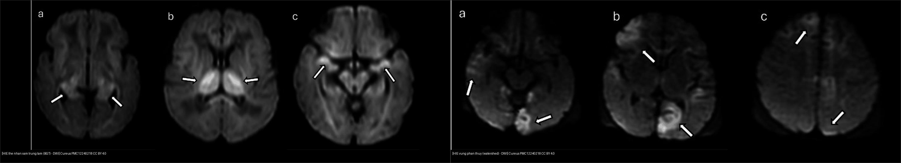
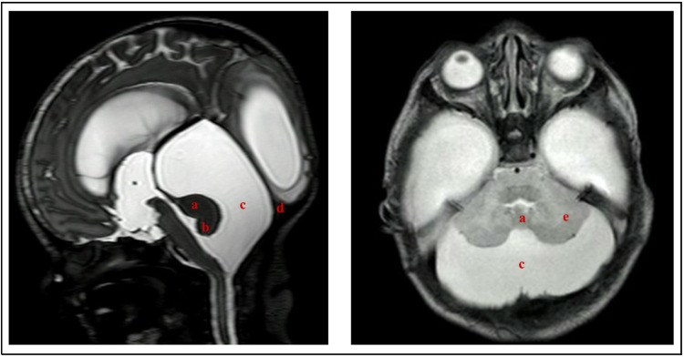
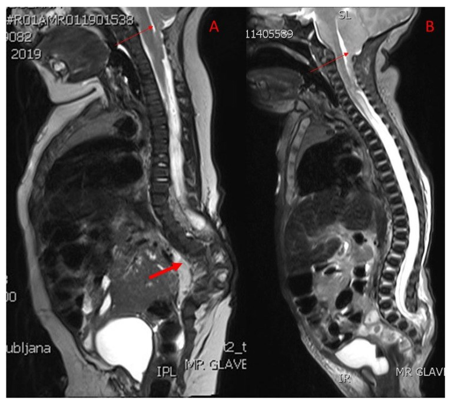
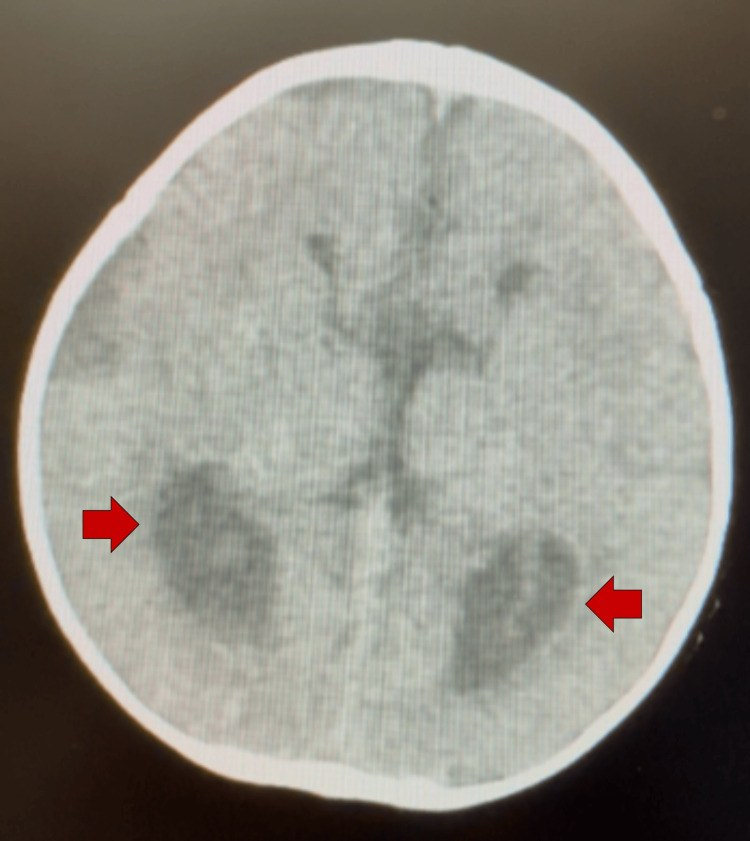
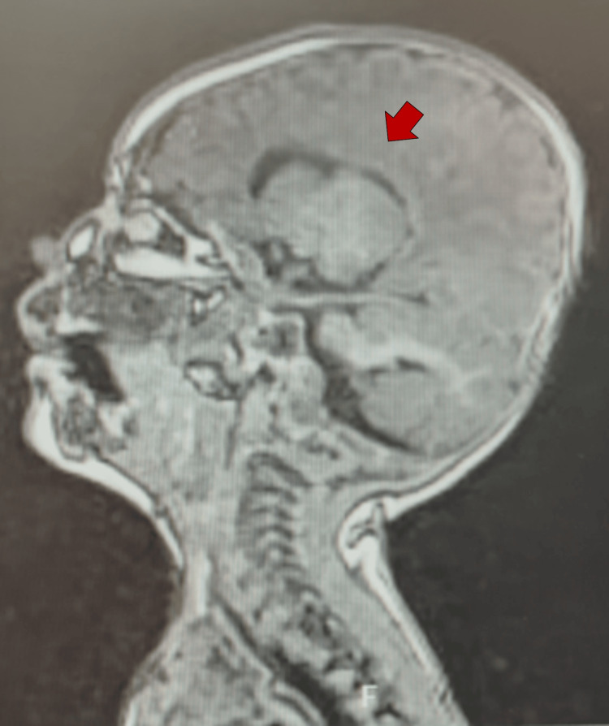
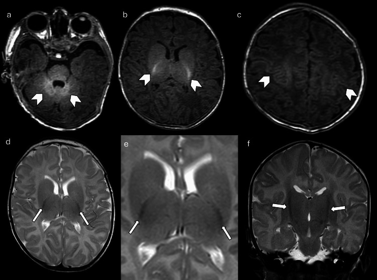

655 — Bệnh não thiếu oxy–thiếu máu sơ sinh (HIE) & dị tật bẩm sinh hệ thần kinh (Chiari II, Dandy-Walker, bất sản thể chai)
Tags: pattern:hie-dwi pattern:di-dang-ho-sau pattern:bat-san-the-chai vung:nao-nhi score:Sarnat score:TVA protocol:MRI-nao-so-sinh
Mức chắc chắn (certainty): tổng hợp y văn (literature synthesis) — nhóm tự biên từ y văn mở (bài tổng quan có số + case report CC BY), chưa gắn một ca nguyên văn duy nhất.
1. Tổng quan bệnh học – cơ chế hình ảnh
a) Bệnh não thiếu oxy–thiếu máu (hypoxic-ischemic encephalopathy, HIE)
- Bệnh học: ngạt chu sinh (perinatal asphyxia) → giảm tưới máu/oxy não → suy năng lượng sơ phát (ATP sụp) rồi suy năng lượng thứ phát sau 6–24 giờ (viêm, stress oxy hóa, kích thích độc tế bào thần kinh, apoptosis). Tần suất HIE ~1–2/1.000 trẻ sinh sống; là nguyên nhân hàng đầu bại não (cerebral palsy) ở trẻ đủ tháng.
- TẠI SAO DWI dương tính sớm: bơm Na⁺/K⁺–ATPase ngừng → tế bào sưng (phù độc tế bào – cytotoxic edema) → nước từ ngoại bào vào nội bào → chuyển động Brown của phân tử nước bị hạn chế → ADC giảm — sinh ra tín hiệu DWI cao (restricted diffusion). ADC đạt đáy vào ngày 2–4, rồi giả hồi phục (pseudonormalization) khoảng ngày 7–10 (khớp với T2 giả bình thường khi phù thoái triển). Vì vậy: MR sớm ngày 2–4 chốt bằng DWI/ADC, còn T1/T2 chốt sau khoảng ngày 4–8 (sau khi hâm ấm lại) khi tổn thương ngấm T1.
- TẠI SAO T1 sáng – T2 sáng muộn: ở tuần đầu, nhân xám sâu (đồi thị – basal ganglia) tăng tín hiệu T1 (T1 shortening) do phản ứng mô (xuất huyết vi thể, hoại tử), rồi chuyển tăng tín hiệu T2 ở tuần 2 do phù/gliosis. MRS: tỷ lệ lactate/NAA tăng trong vài ngày đầu (lactate đỉnh rồi giảm cuối tuần 1) — trong nghiên cứu HEAL, vùng ADC < 800 × 10⁻⁶ mm²/s (0,8 × 10⁻³ mm²/s) được đo tự động để định lượng tổn thương toàn não.
- Chuỗi xung phải đọc TRƯỚC DWI — não chưa myelin hóa: trẻ đủ tháng bình thường vẫn có T1 sáng ở phần sau bao trong (posterior limb of internal capsule, PLIC), nhân bụng-bên đồi thị, thân não sau, vùng quanh rãnh trung tâm (perirolandic) và chất trắng tâm bán cầu; tuổi myelin hóa đạt PLIC ~37–38 tuần. Mất tín hiệu T1 sáng bình thường của PLIC là dấu hiệu kinh điển của tổn thương nhân xám sâu vì PLIC là nơi phản ánh sớm nhất tình trạng bó vỏ-tủy.
- Điều trị: hạ nhiệt trị liệu (therapeutic hypothermia, TH) — làm lạnh toàn thân hoặc đầu chọn lọc, mục tiêu 33,5 °C × 72 giờ, khởi động trong vòng 6 giờ sau sinh ở trẻ ≥ 36 tuần có bằng chứng bệnh não vừa–nặng. TH giảm tử vong/di chứng nhưng KHÔNG điều trị khỏi: thay đổi hình thái tổn thương và cần MRI đúng thời điểm sau hâm ấm.
b) Dị tật bẩm sinh hố sau & đường giữa (posterior fossa & midline malformations)
- Phôi thai để hiểu hình ảnh: tiểu não sinh từ môi hình thoi (rhombic lips) ở bờ bên não sau từ khoảng tuần 6; thùy giun (vermis) khép đường giữa theo hướng trên→dưới, hoàn tất quanh tuần 15–18. Thể chai (corpus callosum) tạo từ tuần 8 và hoàn tất ~tuần 18–20 (thứ tự: genu → thân → splenium). Can thiệp trước tuần 12 → bất sản hoàn toàn; tuần 12–20 → bất sản một phần (dysgenesis).
- Dandy-Walker (DWM): có giãn nang não thất IV + thiểu sản/không có giun tiểu não (vermis) với quay lên/xoay trước + hố sau giãn to (torcular–lambdoid inversion: xoang ngang ở cao hơn khớp lambdoid). Tần suất 1/25.000–35.000 trẻ sinh sống, nữ:nam ≈ 3:1; não úng thủy ~80% (chiếm 4–12% não úng thủy nhi).
- Hội chứng giun tiểu não (Dandy-Walker complex): DWM ↔ nang túi Blake (Blake's pouch cyst, BPC) ↔ bể lớn (mega cisterna magna, MCM). Góc tegmento-giun (tegmento-vermian angle, TVA) rộng hơn rõ rệt ở DWM so với BPC/thiểu sản giun.
- Chiari II: bệnh lý hộp sọ nhỏ phía sau làm thùy giun/hạnh nhân thoát vị xuống lỗ chẩm, kèm thoát vị tủy màng (myelomeningocele, MMC) ~100%, não úng thủy ~70–90%, dị dạng thể chai, thân não "beaking" (mỏ chim — tectal beaking), vòm sọ "Luckenschädel". Trước sinh: dấu chanh (lemon sign — xương trán lõm) và dấu chuối (banana sign — tiểu não ôm thân não).
- Bất sản thể chai (agenesis of corpus callosum, ACC): không có bó thể chai → sợi ức chế hai bên bộc lộ thành bó Probst chạy dọc ép thành bên não thất. Kết quả: não thất bên song song, dẹt, chạy xa nhau; giãn sừng chẩm (colpocephaly); não thất ba nằm cao (high-riding third ventricle); hồi não "race car"/"Texas longhorn" trên mặt phẳng ngang và "mũ Viking" trên mặt phẳng trán.
2. Mẫu hình + chẩn đoán phân biệt theo vị trí (gamut)
Nhánh 1 — Tổn thương não do thiếu oxy–thiếu máu (xếp theo kiểu mạch máu bị ảnh hưởng)
- Nhân xám trung tâm (basal ganglia–thalamus, BGT): ngạt cấp, gần như toàn bộ (vỡ tử cung, sa dây rốn, sa mạch máu) → tổn thương đối xứng đồi thị, PLIC, vỏ quanh rãnh trung tâm, thân não sâu. Tiên lượng thần kinh nặng nhất.
- Vùng phân thủy (watershed/peripheral): ngạt từng phần kéo dài → tổn thương vỏ–dưới vỏ vùng kẽ các động mạch lớn (đỉnh–chẩm, parasagittal), né nhân xám sâu.
- Toàn thể (global): tổn thương lan rộng cả chất xám và chất trắng (ngạt nặng kéo dài).
- Điểm chất trắng (punctate white matter injury, PWM): ổ tăng tín hiệu T1/giảm T2 nhỏ ở chất trắng bán bầu dục/trên não thất, hay gặp ở trẻ non tháng, thường lành hoặc di chứng nhẹ.
- Gamut theo hình dạng vùng tổn thương: đối xứng hai bên ở nhân xám sâu = BGT; đối xứng vỏ vùng phân thủy = watershed; một bên theo lãnh thổ động mạch não giữa = đột quỵ nhũ nhi (perinatal arterial ischemic stroke); nhiều ổ rải rác = hạ đường huyết (vùng chẩm–đỉnh) / bệnh chuyển hóa.
Nhánh 2 — Dị tật hố sau (xếp theo hình thái giun tiểu não + não thất IV)
- Giun tiểu não khiếm khuyết + nang não thất IV thông:
- DWM — thiểu sản/không giun + quay giun + hố sau giãn to + não úng thủy.
- BPC — giun bình thường (nhưng quay lên nhẹ) + nang thông với não thất IV, não thất IV bình thường, có thể giãn nhẹ não thất.
- Giun tiểu não bình thường + dịch hố sau nhiều:
- MCM — khoang dịch sau/dưới tiểu não > 10 mm, giun nguyên vẹn, không não úng thủy, torcular bình thường.
- Khối/u hố sau (u nguyên bào tủy, sao bào lông, u màng não thất) — có phần đặc ngấm thuốc, không phải nang dịch thuần (nối [650]).
Nhánh 3 — Dị tật đường giữa liên quan thể chai
- Bất sản thể chai (ACC) đơn độc, một phần (dysgenesis) vs liên quan bệnh cảnh: Chiari II, Dandy-Walker, hội chứng Aicardi (ACC + co giật nhũ nhi + bất thường đáy mắt), rối loạn chuyển hóa thần kinh.
3. Bảng so sánh phân biệt (ma trận đối chiếu)
| Thực thể (entity) | Hình ảnh điển hình (MRI) | Chốt vào (rule-in) | Chốt loại (rule-out) | Gợi ý xác nhận |
|---|---|---|---|---|
| HIE thể nhân xám trung tâm (BGT) | DWI sáng lan đồi thị 2 bên + PLIC + vỏ quanh rãnh trung tâm; T1 đồi thị sáng tuần 1 | Đối xứng đồi thị + bó vỏ-tủy; bối cảnh ngạt cấp (sentinel event) | Vỏ vùng phân thủy đơn thuần, nhân xám sâu bình thường → thể watershed | DWI/ADC ngày 2–4; ADC < 0,8 × 10⁻³ mm²/s; MRS lactate/NAA |
| HIE thể vùng phân thủy (watershed) | DWI sáng vỏ–dưới vỏ vùng đỉnh-chẩm/kẽ mạch (parasagittal), né đồi thị | Vỏ vùng kẽ mạch sáng + nhân xám sâu bình thường | Đồi thị/PLIC sáng → thể BGT/global | DWI ngày 2–4; đối chiếu tuần hoàn |
| HIE thể toàn thể (global) | DWI sáng lan rộng cả chất xám và chất trắng hai bán cầu | Tổn thương lan rộng ≥ 2 vùng mạch + phù não | Chỉ một vùng → nghĩ BGT hoặc watershed khu trú | DWI + T2 axial; theo dõi tiên lượng |
| Tổn thương chất trắng dạng điểm (PWM) | Ổ T1 sáng/T2 tối nhỏ ≤ 2–3 mm ở chất trắng trên não thất; hay trẻ non tháng | Nhiều ổ nhỏ rải rác chất trắng, không theo mạch | Ổ lớn theo lãnh thổ mạch → nhồi máu | Chuỗi T1/T2/T2*; đối chiếu tuổi thai |
| Dandy-Walker (DWM) | Thiểu sản/không giun tiểu não + quay lên, nang não thất IV rộng, hố sau giãn to | Không/quá thiểu giun + TVA rộng + hố sau giãn to | Giun nguyên vẹn + não thất IV bình thường → MCM/BPC | MRI sọ/khung sọ; TVA; tầm soát não úng thủy |
| Nang túi Blake (BPC) | Nang dịch thông với não thất IV, giun bình thường, hố sau giãn nhẹ | Giun tiểu não nguyên vẹn + nang sau tiểu não thông não thất IV | Giun khiếm khuyết → DWM | MRI sagittal T2; theo dõi (thường lành, ít/có thể não úng thủy thoáng qua) |
| Bể lớn (mega cisterna magna) | Khoang dịch sau/dưới tiểu não > 10 mm, giun + não thất IV bình thường | Giun nguyên vẹn + não thất IV bình thường + KHÔNG não úng thủy | Não úng thủy hoặc giun khiếm khuyết → DWM/BPC | MRI sagittal T1/T2 (đo khoang dịch) |
| Chiari II | Hố sau nhỏ, giun/hạnh nhân thoát vị qua lỗ chẩm, thân não "mỏ chim" (tectal beaking) | MMC + hố sau nhỏ + thùy giun/hạnh nhân xuống lỗ chẩm | Tonsil xuống lỗ chẩm > 5 mm mà không MMC → Chiari I | MRI toàn trục + cột sống; US trước sinh (lemon/banana) |
| Bất sản thể chai (ACC) | Não thất bên song song, dẹt, xa nhau; colpocephaly; não thất ba cao | Không bó thể chai + bó Probst + colpocephaly | Thể chai mỏng nhưng còn → teo (atrophy), không phải bất sản | MRI sagittal giữa + mặt phẳng trán (mũ Viking) |

Trái (a–c): DWI — HIE thể BGT: ổ tăng tín hiệu đối xứng ở đồi thị hai bên (mũi tên trắng). Phải (a–c): DWI — HIE thể vùng phân thủy: ổ sáng vỏ–dưới vỏ vùng kẽ mạch, né nhân xám sâu. Nguồn: Cureus PMC12240218, CC BY 4.0. Ảnh ghép letterbox.Dấu hiệu chốt trên từng chuỗi xung
- DWI/ADC: bản đồ chốt tổn thương ngày 2–4 (ADC giảm); nhớ pseudonormalization ngày 7–10.
- T1W: trẻ đủ tháng bình thường phải có PLIC sáng; mất PLIC sáng = dấu sớm của tổn thương nhân xám — đọc T1W TRƯỚC khi kết luận.
- T2W/T2:* T2 sáng muộn (tuần 2); T2* tìm xuất huyết/xuyết tĩnh mạch (một biến chứng cần loại trừ — nối [212]).
4. Protocol chụp + hệ phân độ/điểm chuẩn hóa
- Thời điểm MRI: khi nghi HIE vừa–nặng, MRI sọ (không cản quang) lý tưởng 4–8 ngày sau sinh (đã hâm ấm xong) để T1/T2 phản ánh tổn thương; nếu cần đánh giá sớm, chụp ngày 2–4 và dựa vào DWI/ADC.
- Chuỗi xung tối thiểu: axial T1W, T2W, DWI + ADC, T2 (GRE/SWI)* (loại trừ xuất huyết/huyết khối tĩnh mạch), MRS (lactate/NAA) khi cần tiên lượng; MRA/MRV khi nghi đột quỵ/tắc xoang.
- Phân độ lâm sàng — Sarnat (đánh giá trước khi chụp, quyết định TH):
- Sarnat I (nhẹ): kích thích quá mức, trương lực hơi tăng; không chỉ định TH.
- Sarnat II (trung bình): lơ mơ, giảm trương lực, co giật; chỉ định TH.
- Sarnat III (nặng): hôn mê, giảm trương lực nặng, không phản xạ; chỉ định TH (cân nhắc).
- Tiêu chuẩn TH: ≥ 36 tuần thai, có bằng chứng bệnh não, khởi động < 6 giờ sau sinh, mục tiêu 33,5 °C trong 72 giờ.
- Điểm dự đoán hình ảnh: ADC < 800 × 10⁻⁶ mm²/s (theo phân tích HEAL) và tỷ lệ lactate/NAA trên MRS (AUC ước tính ~0,94) — các chỉ số định lượng tiên lượng kém nhất.
- Đánh giá hố sau: đo góc tegmento-giun (TVA) trên mặt phẳng giữa (TVA rộng hơn ở DWM), kích thước khoang dịch sau tiểu não (MCM > 10 mm), đánh giá giun tiểu não (DWM vs BPC), tìm MMC + hố sau nhỏ (Chiari II).
flowchart TD
A["Trẻ sơ sinh bệnh não (Sarnat II-III)?"] --> B{Bằng chứng ngạt + tuổi thai >= 36 tuần?}
B -->|Không| Z["Tìm nguyên nhân khác: chuyển hóa, nhiễm trùng, đột quỵ"]
B -->|Có| C["Khởi động hạ nhiệt trị liệu < 6 giờ: 33,5 °C x 72 giờ"]
C --> D["MRI sau hâm ấm (ngày 4-8); nếu sớm dùng DWI/ADC ngày 2-4"]
D --> E{Kiểu tổn thương trên DWI/T1?}
E -->|"Đồi thị + PLIC đối xứng"| F["Thể nhân xám trung tâm (BGT) - ngạt cấp: tiên lượng nặng nhất"]
E -->|"Vỏ vùng phân thủy, né đồi thị"| G["Thể watershed - ngạt từng phần kéo dài"]
E -->|"Lan rộng xám + trắng"| H["Thể toàn thể - ngạt nặng kéo dài"]
D --> I{"Bất thường hố sau/đường giữa?"}
I -->|"Không giun + nang NT IV + hố sau to"| J["Dandy-Walker"]
I -->|"Giun bình thường + nang thông NT IV"| K["Nang túi Blake (BPC)"]
I -->|"Giun bình thường + dịch > 10 mm, không úng thủy"| L["Bể lớn (MCM)"]
I -->|"MMC + hố sau nhỏ + giun xuống lỗ chẩm"| M["Chiari II"]
I -->|"NT bên song song + colpocephaly"| N["Bất sản thể chai (ACC)"]
5. Biến thể bình thường và cạm bẫy
- Không myelin hóa bình thường của trẻ sơ sinh: T1/T2 đảo ngược so với người lớn ở chất trắng chưa myelin → dễ đọc nhầm "tổn thương lan tỏa". Đọc T1W PLIC trước tiên; PLIC sáng = myelin hóa tương xứng tuổi.
- Giãn não thất sinh lý nhẹ và khoang dưới nhện rộng của trẻ sơ sinh — phân biệt với não úng thủy (đo chu vi đầu theo dõi, không kết luận một lần chụp).
- Dịch hố sau nhiều đơn độc: đừng vội gọi DWM — kiểm giun tiểu não và góc TVA; giun nguyên vẹn + não thất IV bình thường → MCM (lành tính) hoặc BPC.
- Chiari I vs Chiari II: hạnh nhân xuống > 5 mm không kèm MMC = Chiari I (điển hình vị thành niên, đau đầu/ho, syrinx 30–70%); MMC + hố sau nhỏ + thoát vị giun/thân não = Chiari II. Đừng dán nhãn "Chiari" chung chung.
- Punctate white matter lesions ở trẻ non tháng hay tự thoái triển — không quy kết bại não chỉ dựa vào các điểm nhỏ.
- Cạm bẫy thỏa mãn tìm kiếm (satisfaction of search): thấy tổn thương HIE rồi dừng, bỏ sót huyết khối xoang tĩnh mạch/xuất huyết (chụp T2*/MRV) — bối cảnh "bệnh não sơ sinh" không loại trừ huyết khối.
- Bóng giả trên DWI: DWI bị méo hình (distortion) vùng đáy não/hố sau do giáp xương — đối chiếu ADC và T2 để tránh gọi tổn thương giả.
6. Tự lượng giá — Blind Quiz (ảnh trơn ngoài, đáp án ẩn trong khối chi tiết)
Ca 1 — Trẻ đủ tháng 4 ngày tuổi sau biến cố sa dây rốn, co giật. So sánh 2 ảnh DWI: kiểu tổn thương nào là thể nhân xám trung tâm?
- Gợi ý lâm sàng: bệnh não sau sinh, đã hâm ấm trị liệu; MRI ngày 4.
- Câu hỏi: Ảnh nào là thể BGT, ảnh nào là thể watershed? Dấu hiệu nào quyết định? Dự đoán tiên lượng?
Bấm để hiện đáp án (findings + chẩn đoán)
- Trái (a–c) = thể nhân xám trung tâm (BGT): DWI sáng đối xứng hai đồi thị (mũi tên), lan xuống PLIC/thân não; khớp bối cảnh ngạt cấp, gần như toàn bộ (sa dây rốn). Tiên lượng nặng nhất (nhân xám sâu + bó vỏ-tủy).
- Phải (a–c) = thể vùng phân thủy (watershed): DWI sáng vỏ–dưới vỏ vùng kẽ mạch đỉnh-chẩm, né nhân xám sâu; khớp ngạt từng phần kéo dài.
- Nguồn ảnh: Silva et al., Cureus 2025 (PMC12240218), Fig 4 & Fig 5, CC BY 4.0.
Ca 2 — Bé trai 2 tháng, chu vi đầu tăng nhanh. MRI T2 (giữa + ngang): mô tả hố sau.

- Gợi ý: đầu to, thóp căng; không có khối đặc ngấm thuốc.
- Câu hỏi: Giun tiểu não ra sao? Não thất IV và hố sau? Chẩn đoán + phân biệt với bể lớn/nang Blake?
Bấm để hiện đáp án (findings + chẩn đoán)
- Dandy-Walker (DWM): thiểu sản giun tiểu não + quay lên, nang não thất IV rộng thông vào bể lớn, hố sau giãn to (a,b,c,d = các thành phần nang). Kèm não úng thủy (thường ~80% ca DWS).
- Phân biệt: BPC — giun nguyên vẹn, nang thông não thất IV; MCM — giun + não thất IV bình thường, khoang dịch > 10 mm, không úng thủy. Chốt bằng góc tegmento-giun (TVA) rộng hơn ở DWM.
- Nguồn ảnh: Ocampo-Navia et al., Childs Nerv Syst 2025 (PMC12125060), Fig 4, CC BY.
Ca 3 — Trẻ bại hai chi dưới, tiền sử thoát vị tủy màng đã phẫu thuật. MRI T2 cột sống cổ-ngực.

- Gợi ý: không đứng được, thất điều tiểu não; có sẹo mổ lưng.
- Câu hỏi: Dấu hiệu ở hố sọ sau/cột sống cổ? Chẩn đoán? Vì sao luôn đi kèm dị tật nào?
Bấm để hiện đáp án (findings + chẩn đoán)
- Chiari II: thùy giun/hạnh nhân thoát vị xuống lỗ chẩm (mũi tên mảnh) + hố sau nhỏ; kèm syringobulbia/hành tủy và dị dạng cột sống (gù thắt lưng). Là hệ quả của hạ áp lực nội sọ thai kỳ (rò dịch qua khuyết tật ống sống) kéo cấu trúc trục sau xuống.
- Chiari II hầu như luôn kèm MMC; não úng thủy ~70–90% cần dẫn lưu (VP shunt ~65% trong một đoàn hệ 18 năm). Phân biệt Chiari I (hạnh nhân > 5 mm, không MMC).
- Nguồn ảnh: Spazzapan & Velnar, Diagnostics 2026 (PMC13360603), Fig 1, CC BY.
Ca 4 — Bé 2 tháng, đầu nhỏ, chậm phát triển, không có bệnh lý khớp sọ. CT ngang và MRI dọc giữa.


- Gợi ý: chu vi đầu dưới bách phân vị 5 kéo dài; không có khối u.
- Câu hỏi: Dấu hiệu "race car" là gì? Não thất ba ở đâu? Chẩn đoán?
Bấm để hiện đáp án (findings + chẩn đoán)
- Bất sản thể chai (ACC): CT ngang — não thất bên song song, chạy xa nhau + giãn sừng chẩm (colpocephaly, mũi tên) tạo hình "race car". MRI dọc giữa — thiếu toàn bộ bó thể chai, não thất ba nằm cao.
- Cơ chế: bó Probst (sợi thể chai không bắt chéo) chạy dọc ép thành bên não thất → hình thể đặc trưng. Có thể gặp kèm BPC (như ca này) — cần phân tích tầng.
- Nguồn ảnh: Ingram et al., Cureus 2026 (PMC13464584), Fig 3 & Fig 4, CC BY.
Ca 5 — Trẻ đủ tháng khoẻ, MRI T1W: phần sau bao trong có tín hiệu sáng. Đây là bệnh lý hay bình thường?

Bấm để hiện đáp án (findings + chẩn đoán)
- Bình thường: trẻ đủ tháng có T1 sáng ở thân não sau, PLIC, đồi thị bên, chất trắng tâm bán cầu và vùng quanh rãnh trung tâm (mũi tên) — đây là myelin hóa bình thường theo tuổi, KHÔNG phải tổn thương.
- Cạm bẫy: ngược lại, mất PLIC T1 sáng ở trẻ có ngạt = dấu hiệu tổn thương sâu sắc. Vì vậy luôn đọc T1W PLIC trước khi kết luận tổn thương trên DWI.
- Nguồn ảnh: Silva et al., Cureus 2025 (PMC12240218), Fig 3, CC BY 4.0.
Bài liên quan chéo
- 600 – Tổng quan Hệ Nhi khoa
- 650 – Thần kinh nhi (xuất huyết mầm, u hố sau)
- 610 – Suy hô hấp sơ sinh & dị dạng phổi bẩm sinh
- 210 – Giải phẫu sọ não cắt lớp
- 201 – Protocol sọ não
Ảnh
- Tên file:
NNN_slug_Modality_SourceID.jpg. Chi tiết nguồn + giấy phép từng ảnh:images/CREDITS.mdvàsources.md. - Ảnh nguồn đều CC BY (ghi nguồn đầy đủ); ảnh ghép đối chiếu tạo bằng
tools/make_composite.py(letterbox, không crop/kéo giãn).
Không dùng để chẩn đoán độc lập khi chưa có người hướng dẫn.